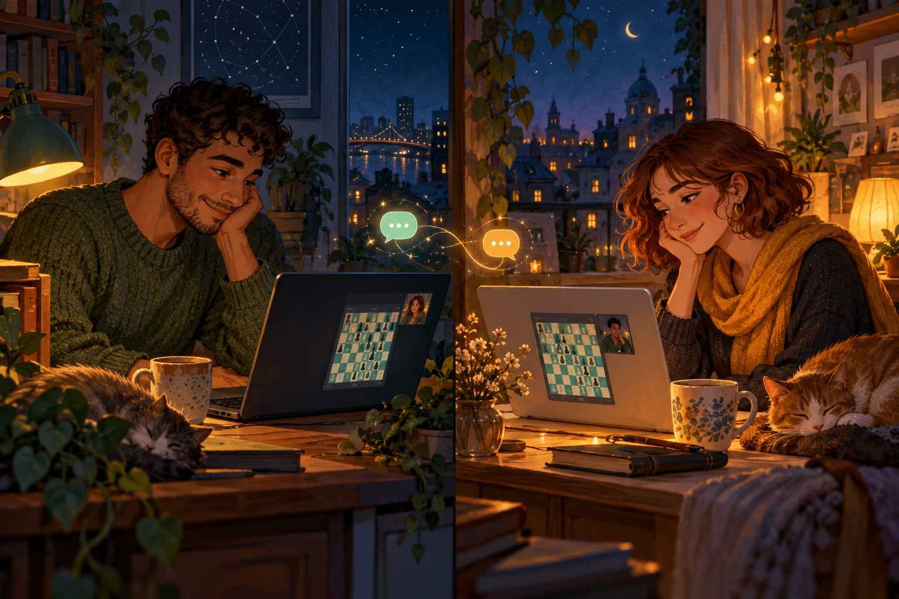
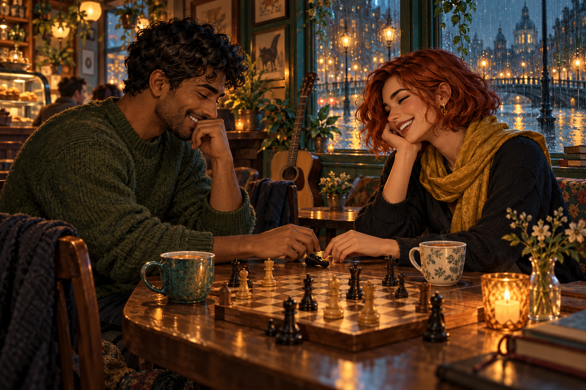
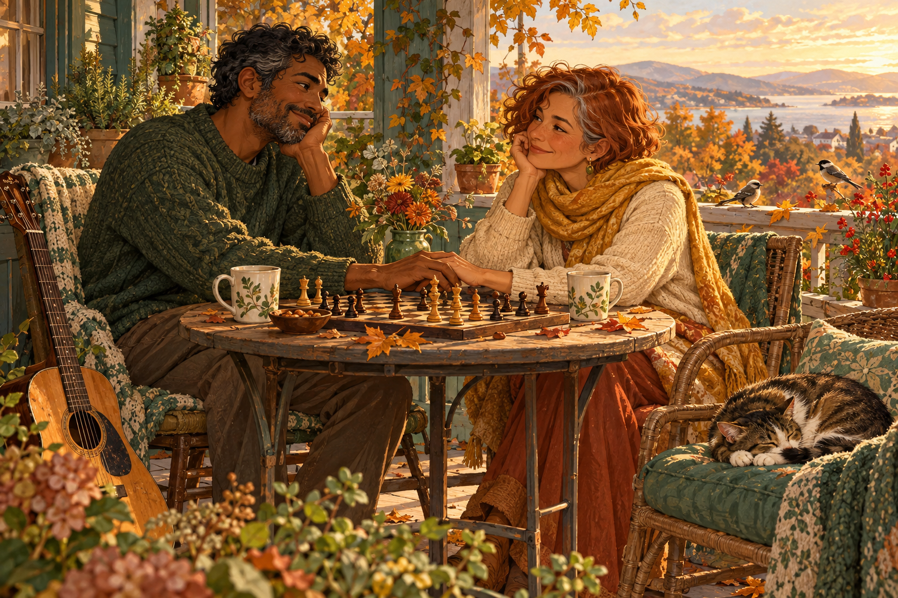

First hello · Year One
A rematch next week?
Rowan was twenty-eight when the arena paired them with Jules, who was twenty-nine and playing from a kitchen table crowded with tea mugs.
They typed hello before either made a move. Jules won a pawn; Rowan found a check. The game wandered into a draw neither had planned, then neither would resign.
“That was a ridiculous game,” Jules wrote.
“A good ridiculous?” Rowan asked.
“The best kind. Rematch next week?”
Next week became Thursdays. Thursdays became puzzles, songs, rain outside the window, and learning each other’s tea preferences.

The café board · Year Three
Honest move, kind words
They chose a chess café for their first meeting in person because a board gave nervous hands somewhere to go. Rowan arrived early and rearranged the pieces twice. Jules arrived with a copper scarf and a smile that made the opening position feel suddenly irrelevant.
They played badly. They laughed well.
At move twelve, Rowan hung a knight. Jules touched it, then paused.
“Do you want the honest move,” Jules asked, “or the kind move?”
“The honest move. But say something nice about it first.”
Jules took the knight. “It was a beautiful blunder.”
After the game came tea, then dinner, then a rainy walk under one umbrella and not quite enough room beneath it.

Their small opening · Year Eight
Come back to the board
By year eight they had a porch, two mugs that did not match, a sleepy cat who considered the board a warm square, and a guitar Rowan played softly after Jules fell asleep.
They kept their Thursday game. Some weeks it was serious; some weeks one tried an opening from a video and forgot what came next. In their notebook, Jules wrote: The point is to come back to the board.
A familiar endgame · Year Twenty-Two
By the time the garden grew around the porch, the chess clock had stopped working. Neither replaced it. The cat took the chair. A black knight lay on its side where it had fallen last Thursday.
“Your move,” Rowan said.
“I thought it was your move.”
“Then we’re both waiting.”
“That sounds like a draw.”
“A draw by agreement?”
Jules laid a hand over Rowan’s. “A draw by tea.”
No one needed to win the game to know they had chosen the same table, again and again, for twenty-two years.